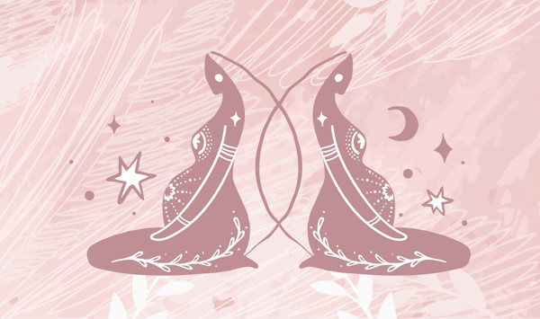

My role as a birth attendant is being emotionally and energetically present, knowledgeable and just to be with the mother through whatever those hours are, not having other responsibilities that have to be fulfilled. Just being.
The word 'Doula' (pronounced 'doola') is a Greek word meaning 'woman servant or caregiver'. More recently, it refers to someone who offers emotional and physical support to a woman and her partner before, during and after childbirth. A Doula (also known as a birth attendant) believes in 'mothering the mother', enabling a woman to have the most satisfying experience that she can, from pregnancy and into motherhood. This type of support allows the whole family to relax and enjoy the experience too. Doulas are trained and experienced in childbirth and are usually mothers themselves. They have a good knowledge and awareness of female physiology, but a Doula does not support the mother in a medical role - that is the job of the midwife or doctor. She also does not make decisions for the couple, but she supports them through the decision making process and provides balanced information so the couple can make their own decisions. A Doula works in birth centres, private and public hospitals and at homebirths in conjunction with midwives - but never as the sole carer at birth.
There are many studies from around the world which have demonstrated very impressive benefits for the mother, father and baby, including:
These are not misprints! The benefits are significant. Most of the women in the studies were accompanied by male partners, however study results show that women who had the support of a male partner and a doula fared best, for example, the caesarean rate of women supported by both a male partner and a doula was significantly lower (15.4%) than the caesarean rate for women supported only by their partners (24.4%). Studies also clearly show the positive benefits of doula support occur regardless of a woman's economic status or whether or not they were privately insured.
According to studies, rather than reducing the partner's participation in the process, a Doula's support complemented and reinforced the partner's role. Partners felt more enthusiastic and that their contribution to the labour and birth was meaningful and helpful. Not only did partners report higher levels of satisfaction after the birth, but mothers reported feeling more satisfied with their partner's role at birth too
Natural pain relief techniques that a Doula might suggest during Labour.
There are many natural pain relief methods that can assist a woman in labour that Doulas recommend when they are supporting a woman in labour. Below is a list of some of the techniques that woman find help to cope with the pain:
